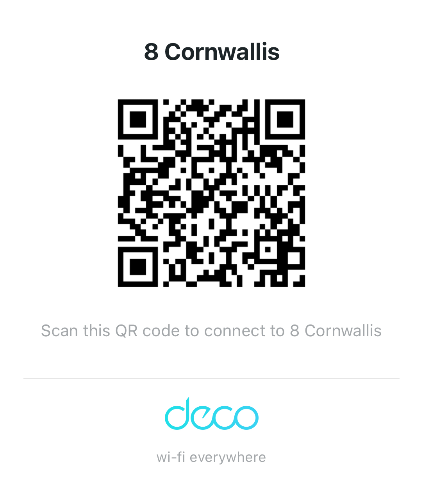

Wi-Fi
Most used- Network
- 8 Cornwallis
- Password
- welcome28Cornwallis
Bristol Guest Guide
We hope you have a wonderfully comfortable stay here in Bristol. This page brings together the house essentials, practical notes and a few favourite local places so everything is easy to find while you are settling in or heading out for the day.
Address
8 Cornwallis Avenue, Clifton, Bristol BS8 4PP
Arrival and access details are shared separately before check-in, so this page can stay simple and easy to share.

At a Glance
The details guests usually want first, all in one place: Wi-Fi, heating, parking, contact information and a few quick practical notes.
If it is easier on your phone, scan this code to join the Wi-Fi without typing the network name and password.

Parking outside the house is residents only. If you are bringing a car, please send your registration number in advance and we will arrange a visitor permit if needed.
Bristol also has a Clean Air Zone. The house is not in the zone, but depending on your route into Clifton you may pass through it.
The heating runs on a timed programme and is controlled from the thermostat in the kitchen. If you would like it warmer, simply raise the target temperature to override the schedule.
If anything is unclear or something needs attention, please message us in your existing HomeExchange or WhatsApp thread and we will do our best to help quickly.
House Guide
The notes below cover the details that are most useful once you are in and settled. Open whichever section you need.
Appliance Help
A quick skim-friendly summary of the appliances guests tend to use first.
Pods are in the wooden container next to the machine.
Location: Kitchen
Tablets are under the sink.
Location: Kitchen
The machine is in the outbuilding off the garden.
Location: Utility outbuilding
Please empty the water drawer after each cycle.
Location: Utility outbuilding
Use the TV remote for the television and the separate Sky remote.
Location: Living room
Use the remote left on the mirror shelf.
Location: Top bedroom
Bristol Moodboard
Clifton, the harbourside and the city centre are all easy to fold into a relaxed day out from the house.

Local Favourites
A few reliable favourites nearby for coffee, breakfast, an easy lunch or a relaxed evening out.
An excellent stop for a matcha drink and Japanese treats.
Open in mapsWood-fired pizza in a relaxed setting.
Open in mapsJapanese food, good for sushi and small plates.
Open in mapsIndian food and a good option for a cosy dinner.
Open in mapsMichelin-style special dining for a more occasion feel.
Open in mapsHigh-quality restaurant meals in an elegant setting.
Great if you are in the mood for an excellent burger.
A lovely local option for a swim, a meal or simply a bit of Bristol atmosphere.
Explore Bristol
If you are wondering where to start, these routes make for an easy and very Bristol sort of day.
Head uphill via Polygon Lane and Hensman Hill, browse the independent shops and cafes in Clifton village, then continue on to the bridge.
Walk downhill from the house towards the harbour and make a loop around the waterfront for one of the best easy rambles in the city.
Bristol is famous for its street art, including Banksy works and many others. These links are a good place to start if you feel like doing a self-guided wander.
Before You Leave
A quick final check before you set off.
We hope you have a lovely time in Bristol and that the house feels easy to settle into. Wishing you safe onward travels when it is time to head on.